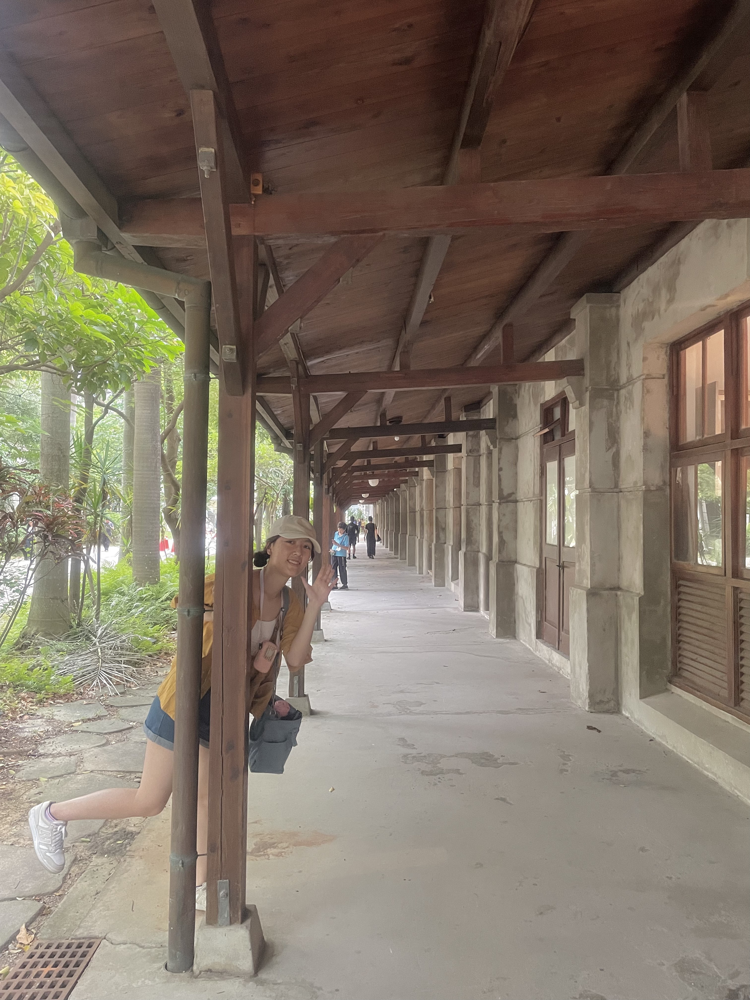
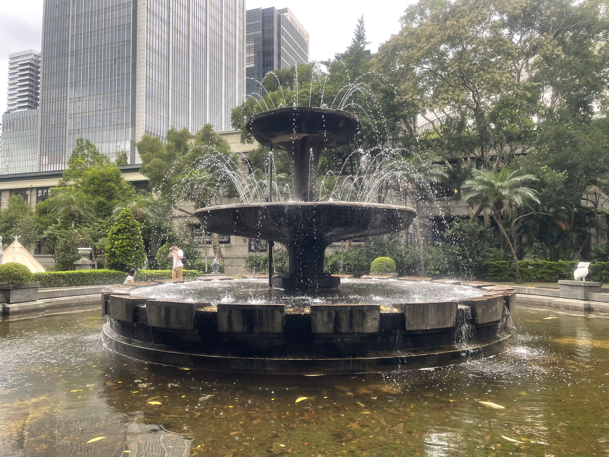
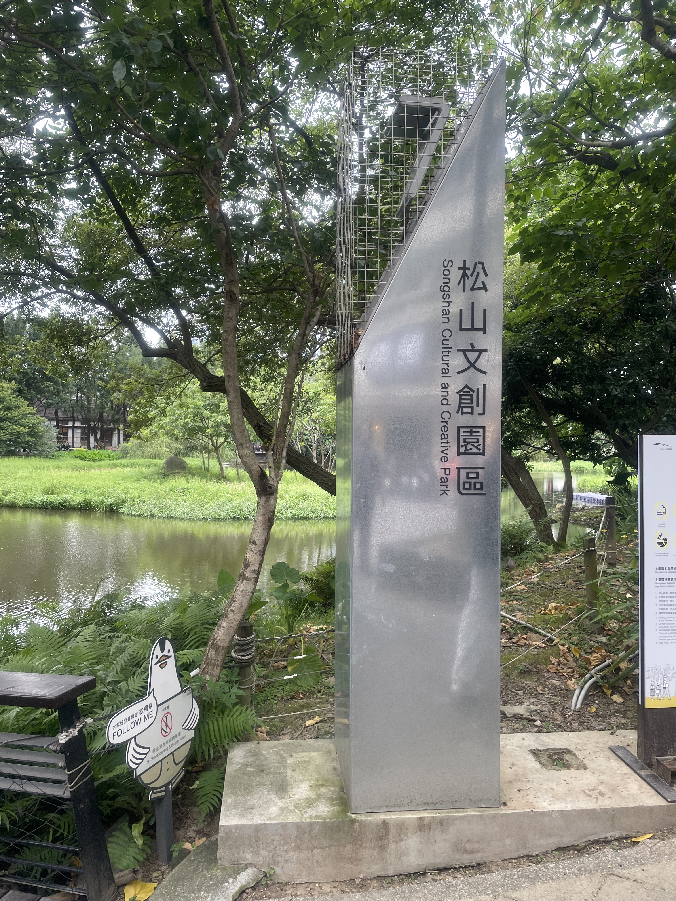
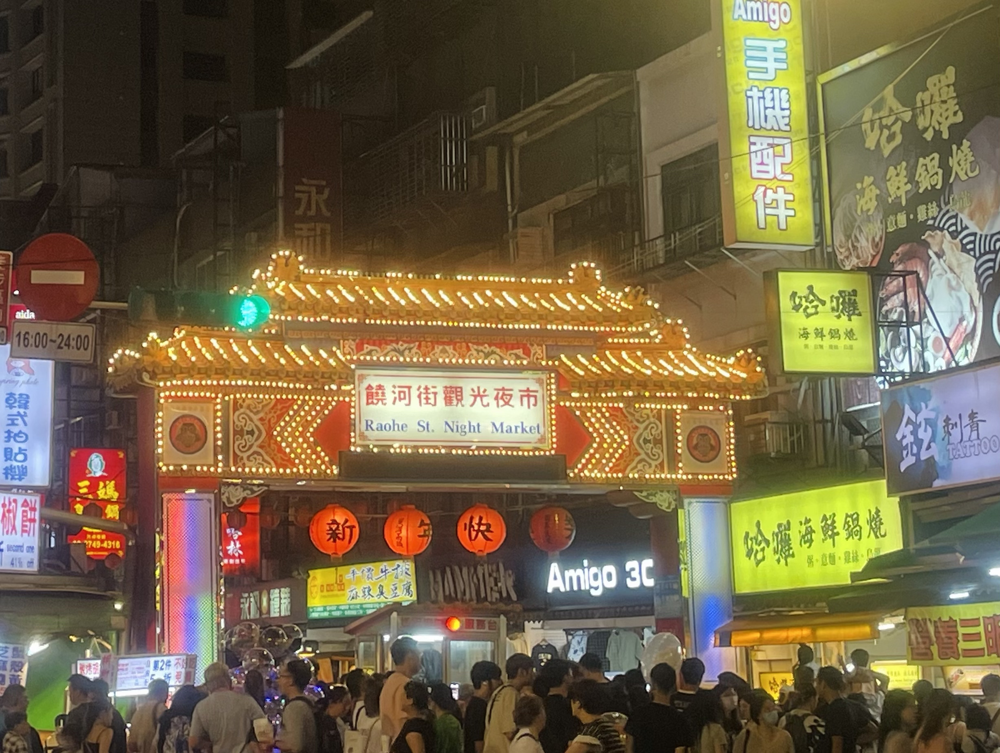
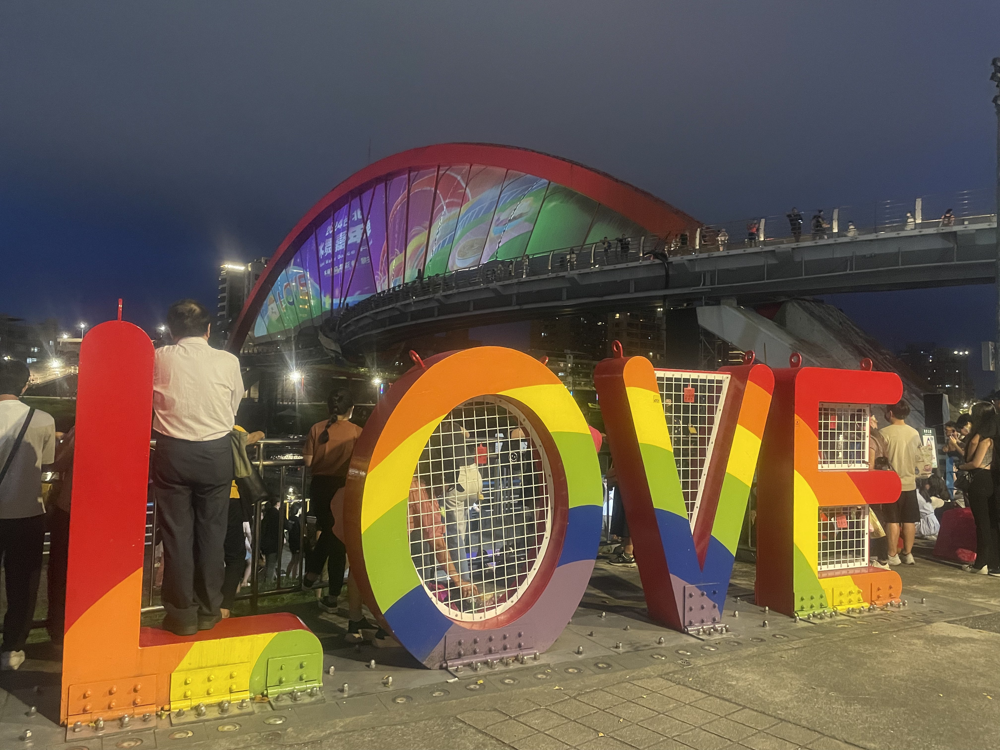
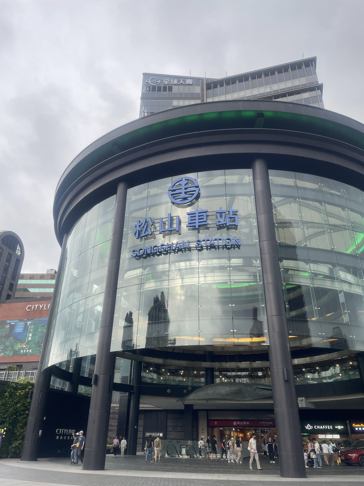

台北市松山區
基本資訊
位於臺北市東北側，是臺北市發展成熟且機能完善的行政區之一，兼具商業活動、住宅生活與文化休閒功能。由於地處市中心，交通網絡密集，是連結臺北市各區的重要節點。 松山區的發展與交通與產業密切相關。早期因松山機場與鐵路設施帶動周邊發展，逐漸形成商業與住宅並重的城市型態。區內同時保有老社區與新式商辦大樓，呈現出新舊交錯的都市景觀。
主要景點
- 擁有大型商場、市場與多元餐飲聚集地，其中以饒河街夜市最具代表性，展現濃厚的庶民文化與夜間經濟活力
- 松山文創園區、河濱公園與多處綠地，結合展覽、文創活動與日常休憩功能，使文化、創意與城市生活相互融合
推薦景點
| 松山文創園區
前身為日治時期建立的「松山菸廠」，是臺灣少數完整保存的大型近代工業遺址之一。園區在停產後，透過修復與再利用，轉型為結合文化、創意與公共空間的文創基地，成為臺北重要的文化地標。 園區保留了菸廠時期的廠房結構、水池與綠地軸線，紅磚建築與寬闊空間展現出工業風格的歷史氛圍，同時融入現代展覽與設計元素。這種「舊建築再生」的方式，不僅保存了產業記憶，也賦予空間新的文化功能。 目前松山文創園區常態舉辦展覽、設計市集、音樂與文化活動，並設有展演空間、書店與餐飲設施，吸引藝術創作者、市民與觀光客前來。園區同時也是推動臺灣文創產業、設計交流與城市文化的重要平台。
| 彩虹橋
橫跨基隆河，連結松山與內湖兩岸，是兼具交通與景觀功能的行人與自行車專用橋梁。橋梁以流線型鋼構設計為特色，橋身在夜間會搭配燈光變化，呈現繽紛色彩，因此得名「彩虹橋」，也是臺北市知名的夜景景點之一。 白天的彩虹橋與河濱公園、自行車道相互串聯，常見慢跑、騎乘自行車與散步的民眾，營造出輕鬆的休閒氛圍。入夜後，橋體燈光倒映在河面上，與周邊城市景觀交織，成為攝影與約會的熱門地點。





